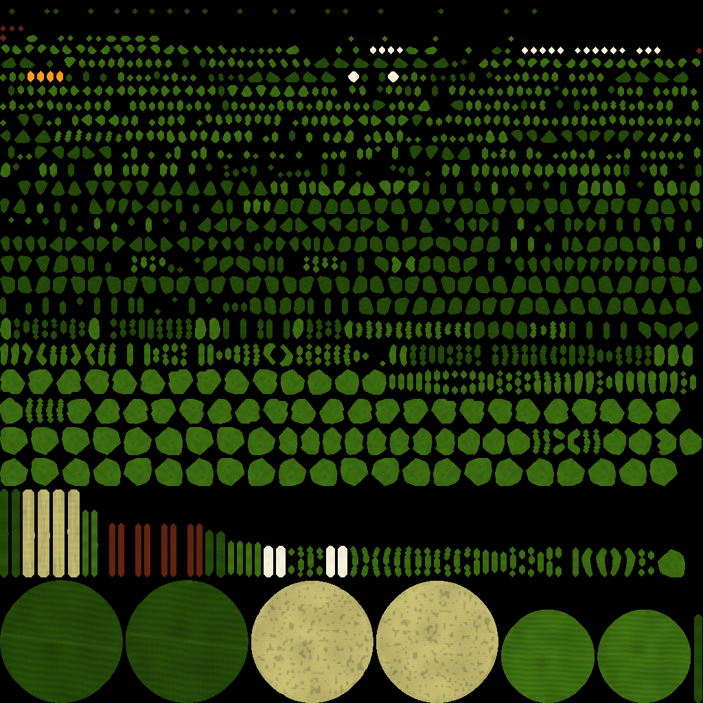
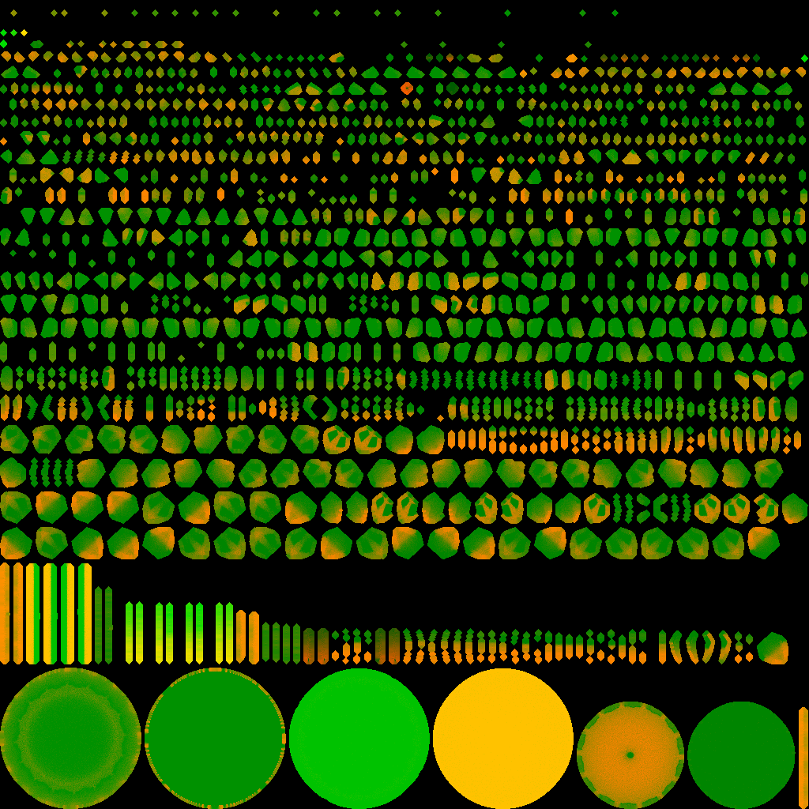

กระทงไทย
จากไอเดียสู่ไฟล์พร้อมใช้
ลองเลือก 3 รูปแบบ ดูภาพที่เรนเดอร์จาก GLB จริง คัดลอก prompt ไปใช้กับ skill หรือดาวน์โหลดโมเดลที่ฝัง texture พร้อมผลตรวจ

โหลดภาพไม่สำเร็จ กรุณาตรวจไฟล์ตัวอย่างหรือเปิดผ่าน local web server
ภาพ 3 มุมจากไฟล์ที่เปิดกลับใน Blender · ดาวน์โหลด GLB เพื่อเปิดในโปรแกรม 3D
กระทงใบตอง
ทรงกลม · ใบตองพับ · ฐานหยวกกล้วย
- Triangles
- 9,256
- UV islands
- 1,586
- Texture atlas
- 1,024 px
GLB ฝัง BaseColor, Normal และ ORM · ผ่าน reimport และ Khronos Validator: 0 errors / 0 warnings
Prompt เป็นแนวทางใช้งาน ไฟล์ตัวอย่างชุดนี้สร้างจาก preset ที่ระบุด้วย pipeline v3.2.0 ผลจากการสั่งงานครั้งใหม่อาจต่างกันตามการปรับแบบ
เส้นทางจากคำสั่งสู่โมเดล
รายละเอียด workflowกำหนดรูปทรง
เลือกตระกูลกระทง วัสดุ และภาพอ้างอิง ก่อนสร้าง geometry และตรวจ silhouette
ตรวจ Mesh และ UV
ตรวจ topology, overlap, padding และ texel density แยก UV สำหรับ bake โดยคงต้นฉบับไว้
Bake และตรวจ GLB
Bake PBR จริง ฝัง texture ใน GLB แล้วเปิดกลับมาตรวจและเรนเดอร์สามมุม
ตัวอย่างแผนที่ PBR
ไฟล์จริงจากกระทงใบตอง · atlas 1,024 × 1,024 px


sRGB · สีพื้นผิว ไม่รวมแสง

Non-Color · tangent space +Y


R = AO · G = Roughness · B = Metallic


สิ่งที่ตรวจแล้ว
25/25 tests ผ่านใน Blender 5.2.2 LTS ครอบคลุม Mesh/UV QA และ bake/export ส่วนไฟล์ GLB ทั้ง 3 แบบผ่าน Khronos Validator โดยไม่มี errors หรือ warnings
โมเดล ภาพ และ texture ในหน้านี้คง bytes จากรอบที่ตรวจแล้ว มี SHA256 ในผลตรวจของแต่ละแบบ ยังไม่ได้รับรองความเหมือนภาพอ้างอิงหรือประสิทธิภาพบนอุปกรณ์เป้าหมาย